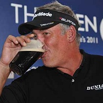

2011
Open Golf Pool
The Royal St. George's Golf Club
Sandwich, England
July 10-17, 2011
The Royal St. George's Golf Club
Sandwich, England
July 10-17, 2011
My apologies for not running a US Open pool. A hard drive crash (back up your work, folks!) and work took precedence. However with Tiger dropping out and Weirsy and Vijay breaking their major participation streaks at Congressional, perhaps, I wasn’t in the mood. But along came Rory! What a great performance and bounce-back from the Masters. Hopefully we’ll see him or another young gun challenge for the claret jug. The pool is up. Good luck, and get your entries in now. Fore!
Congrats to Darren Clarke
on his triumph at
the Open!
Congrats to Liga Hanley,
team At the
19th, on her first pool victory!

Darren Clarke 2011 Open Champ